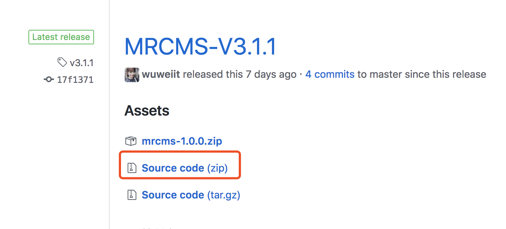

快速体验
本节将带领大家快速体验MRCMS系统，过程比较简单。Java Web开发人员可以忽略了，本篇适合略懂java开发的朋友，针对Linux系统的部署。
从github下载最新版本程序包（请下载源码哦）  https://github.com/wuweiit/mushroom/releases
文件较大，耐心等待下载....，或者这样，直接拉取Git源码，git源码是最新的，但不排除会有bug存在，出现问题积极到MRCMS交流群里反馈错误。
git clone https://github.com/wuweiit/mushroom.git
准备Maven环境
下载二进制版本Maven，如下命名格式的即可
http://mirror.bit.edu.cn/apache/maven/maven-3/3.5.4/binaries/apache-maven-3.5.4-bin.tar.gz
解压到到 /opt/maven 目录，配置环境变量
修改 /etc/profile 增加一行
export PATH=$PATH:/opt/maven/bin/
执行以下命令让配置生效
source /etc/profile
执行mvn命令测试部署是否成功
mvn --version
执行后输出如下情况的版本信息，恭喜你Maven已经部署成功。
Apache Maven 3.3.9 (bb52d8502b132ec0a5a3f4c09453c07478323dc5; 2015-11-11T00:41:47+08:00)
Maven home: /DATA/buildtools/apache-maven-3.3.9
Java version: 1.8.0_131, vendor: Oracle Corporation
Java home: /Library/Java/JavaVirtualMachines/jdk1.8.0_131.jdk/Contents/Home/jre
Default locale: zh_CN, platform encoding: UTF-8
OS name: "mac os x", version: "10.12.6", arch: "x86_64", family: "mac"
很不幸失败了检查是否安装Java环境，推荐安装JDK8版本，本文不在介绍如何安装JDK请参阅网络博客或者官方文档。
启动MRCMS系统
解压前面下载的包到 /opt/mrcms ，检查代码中是否有安装锁文件，如果有请删除该文件。
src/main/webapp/data/install.lock
进入到代码根目录/opt/mrcms ，执行以下命令，此时你执行mvn卡爆了的情况，请查阅maven仓库如何加速。
mvn jetty:run -Djetty.port=8080
我们看到日志啪啪啪的下载依赖的各种jar包，耐心等待，下载完了就能看到MRCMS的芳容了。
Jetty 默认端口为8080，访问地址：http://localhost:8080 进入安装界面
启动完成后，日志输出如下：
[INFO] Started o.e.j.m.p.JettyWebAppContext@4bb003e9{/,file:///opt/mrcms/src/main/webapp/,AVAILABLE}{file:///opt/mrcms/src/main/webapp/}
[INFO] Started ServerConnector@7afb9c93{HTTP/1.1,[http/1.1]}{0.0.0.0:8099}
[INFO] Started @53414ms
[INFO] Started Jetty Server
进入安装界面
Web界面的安装文档详见：《 MRCMS安装步骤 》